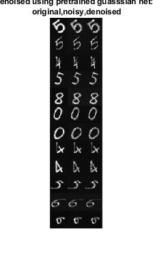

digitDatasetPath = fullfile(matlabroot,'toolbox','nnet', ...
'nndemos','nndatasets','DigitDataset');
imds = imageDatastore(digitDatasetPath, ...
'IncludeSubfolders',true, ...
'LabelSource','foldernames');
imds.ReadSize = 500;
rng(0)
imds = shuffle(imds);
[imdsTrain,imdsVal,imdsTest] = splitEachLabel(imds,0.95,0.025);
dsTestNoisy = transform(imdsTest,@addNoise);
dsTest = combine(dsTestNoisy,imdsTest);
dsTest = transform(dsTest,@commonPreprocessing);
timg=read(dsTest);
im1=zeros(32*12,32);
imref1=zeros(32*12,32);
for i=1:12
im1((i-1)*32+1:i*32,:)=timg{10+i,1};
imref1((i-1)*32+1:i*32,:)=timg{10+i,2};
end
net = denoisingNetwork('DnCNN');
res1 = denoiseImage([im1,im1],net);
im_disp=[imref1,im1,res1(:,1:32)];
figure;
imshow(im_disp);
title({'denoised using pretrained guasssian net:, ','original,noisy,denoised'}, 'Visible', 'on');

I = im2double(imread('cameraman.tif'));
noisyI = poison_noise(I);
pred_dncnn=denoiseImage(noisyI, net);
load nnet.mat
pred_I=zeros(size(noisyI));
for x=1:8
for y=1:8
cx1=32*(x-1)+1; cx2=32*x;
cy1=32*(y-1)+1; cy2=32*y;
pred_I(cx1:cx2,cy1:cy2)=predict(net, noisyI(cx1:cx2,cy1:cy2));
end
end
figure;
imshow([I,noisyI,pred_I, pred_dncnn]);
title('original,noisy,denoised our net, denoised-DnCNN', 'Visible', 'on');